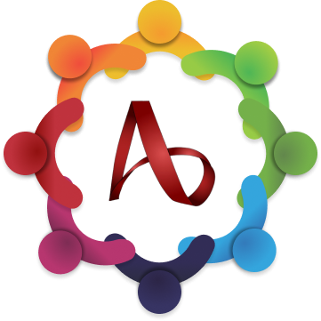

Fórum Tecnológico Interdisciplinar
Inscrição conluída, esse é seu Codigo QR de acesso ao evento
Tenha-o em mãos na portaria!
Baixar QrCode
ETEC Adolpho Berezin
Av. Monteiro Lobato, nº 8000
Bal. Jussara, Mongaguá